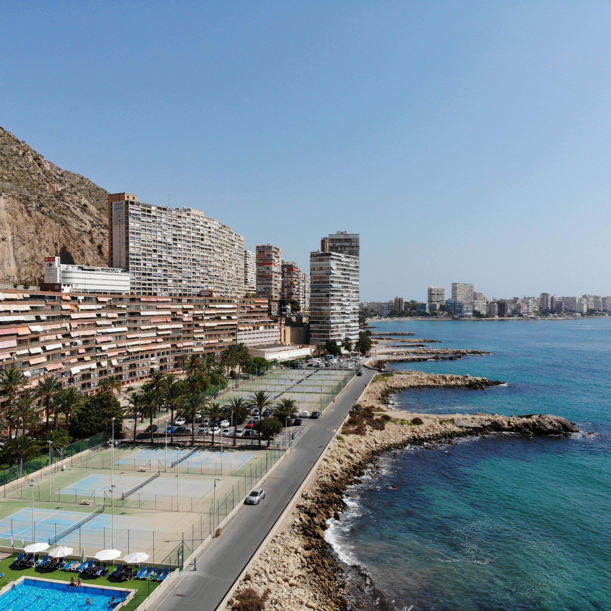
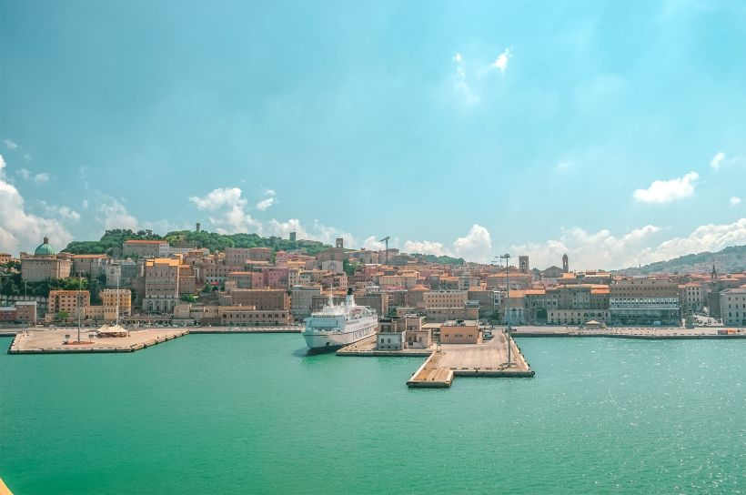
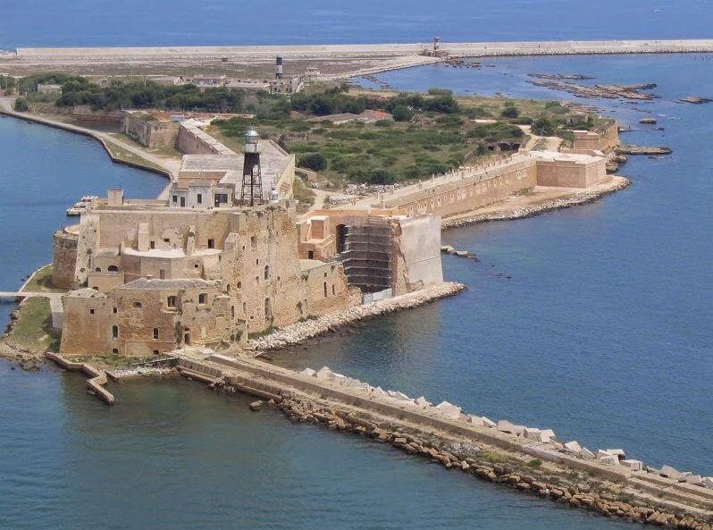
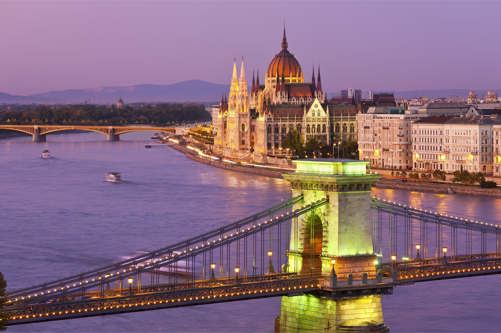
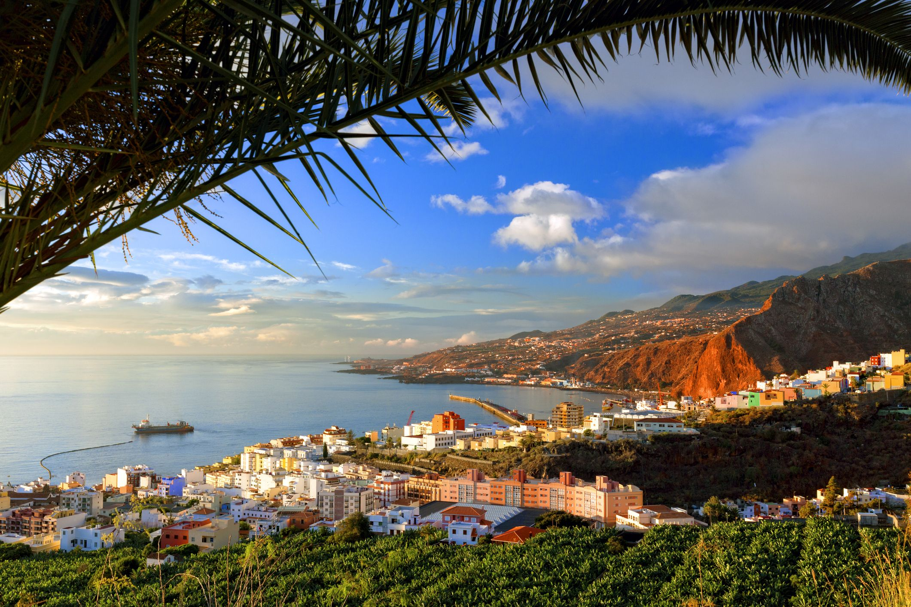

Destinos Volotea
Explora las maravillas que Europa tiene para ofrecer con Volotea. Desde la costa mediterránea de Alicante hasta los encantadores canales de Budapest, nuestros destinos te llevarán a experiencias únicas e inolvidables. ¿Qué estás esperando? ¡Planifica tu próxima aventura con Volotea hoy mismo!
Descubre la esencia de cada destino, desde la rica historia y cultura de Ancona hasta la gastronomía única de Brindisi. Disfruta de la vibrante vida nocturna de Bilbao o sumérgete en el bullicio de los mercados de Alicante. Con Volotea, cada viaje es una oportunidad para descubrir nuevas experiencias y crear recuerdos duraderos.
¿Quieres relajarte en las playas de La Palma o explorar los monumentos históricos de Budapest? Sea cual sea tu destino, Volotea está aquí para hacer que tu viaje sea cómodo, conveniente y lleno de aventuras. Con vuelos directos y excelentes servicios a bordo, tu viaje comienza en el momento en que subes a bordo de un avión de Volotea.
Conviértete en un embajador de Europa
Estos son los 6 destinos de Volotea: Alicante, Ancona, Bilbao, Brindisi, Budapest
Alicante
Ancona
Bilbao

Brindisi
Budapest
La Palma
Despegamos el 5 de abril, desde el aeropuerto Marco Polo de Venecia, nuestra primera base operativa.